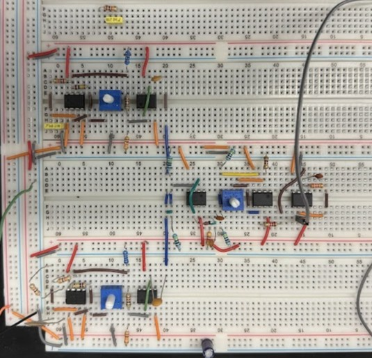
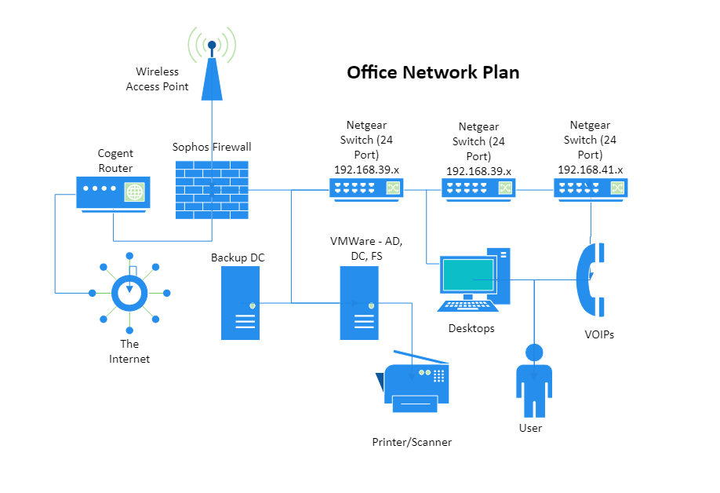

Projects
- CooperLink | Java, React, Azure (May 2026): Fullstack web app connecting Cooper Union students with alumni mentors and career opportunities. Built Spring Boot backend with PostgreSQL and React frontend with Firebase authentication. Containerized with Docker Compose and deployed on Azure. Collaborated with the Cooper Union Alumni Association to refine platform requirements and deployment goals.
- MRI Compressed Sensing Reconstruction | MATLAB, Image Processing (May 2026): Developed an MRI reconstruction pipeline using compressed sensing and wavelet-domain sparsity techniques. Implemented Fourier analysis, multilevel wavelet decompositions across different wavelet bases. Built an iterative gradient descent reconstruction algorithm with random undersampling to simulate MRI scans and evaluate reconstruction error.
- Real-Time ASCII Video Renderer (Video2ASCII) | Python, OpenCV (December 2025): Built a configurable ASCII rendering engine that converts images, videos, and live webcam input into grayscale or true-color ASCII output in real time. Implemented configurable rendering options for color modes, resolution scaling, and multiple input sources.
- FIFO Library | C, Linux (November 2025): A simple FIFO library implemented in C. Built off of semaphore structures that are built off of primitive spin locks. The program is meant to solve the problem of concurrent access to shared data structures in a multi-threaded environment, dealing with multiple readers and writers.
- Homemade Linux Shell | C, Linux (October 2025): Minimal Unix-like shell supporting command parsing, pipelines, I/O redirection, background jobs, and basic scripting. Makes use of the basic system calls. Made for my operating systems class at Cooper Union.
- MOSFET Amplifier | Electrical Engineering (May 2025): Designed and built a MOSFET amplifier in industry-grade software. Simulated performance, and met all specs.
- AI-Chatbot for The Conference Board (AskTCB) | Python, NodeJS, Azure (June 2024 – April 2025): Developed an AI-powered enterprise chatbot for The Conference Board using Azure OpenAI and retrieval-augmented generation (RAG) pipeline. Integrated Azure AI Search, Bing Search APIs, and automated email support workflows into the chatbot platform. Regularly discussed and presented proof of concept to CTO and other relevant stakeholders.
- Multi-Threaded Port Scanner | Python (February 2025): A project made for Communication Networks, a class at Cooper Union. Project requirements included scans based on an input file, outputting results to a file, and having the options to specify hosts and ports to scan. Threading was implemented to make the program run scans in parallel and was able to increase overall speed of the program. The program utilizes socket, threading, and argeparse libraries from Python.
- Physics with Python | Python (December 2024): This experiment, part of Intro to Physics Lab at Cooper Union, used Python to create basic plots demonstrating wave interference and diffraction, phenomena first explored by Thomas Young. Simulations, created with Python's matplotlib and numpy libraries, provided a clearer visualization of his findings.
- Theremin | Electrical Engineering (December 2024): Sophomore Electrical Engineering Projects included reverse engineering and building a Theremin, a musical instrument that produces notes based on proximity to an antenna. Over the semester, components were assembled on breadboards, culminating in a functional Theremin for hands-on demonstration.
- Game Portfolio | C, Python, Git (Jan. 2024 – May 2024): Made games in Programming for Electrical Engineers, a basic computer science class at Cooper Union. Developed SOS, a game like Tic Tac Toe but with a greater degree of difficulty, programmed in C. Created Uno, the popular card game where friendships are destroyed, programmed in Python. Designed Wheel of Fortune, the well-known TV game show, programmed in Python.
- Network Diagram | Microsoft Visio (July 2023): Compiled documentation of network infrastructure at one of Ana’s mid-sized clients. Learned how each part of the client's environment interacted with the others. Utilized the diagram as a map whenever there is any potential internet outage.
You can find this project on my GitHub!
You can find this project on my GitHub!
You can find this project on my GitHub!
Check out AskTCB here!
You can find this project on my GitHub!



